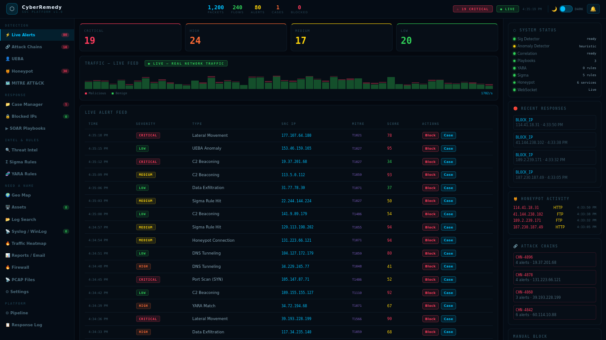

// 07 — PREVIEW
Dashboard Screenshots
A look inside CyberRemedy — real-time threat visibility across every dimension.



👤 UEBA Engineueba.png
Autonomous Threat Intelligence & Response System
Enterprise-grade SIEM with ML anomaly detection, SOAR playbooks, and autonomous threat response — in a single ~200MB binary. No subscriptions. No cloud.
A look inside CyberRemedy — real-time threat visibility across every dimension.

👤 UEBA EngineEvery layer of detection, response, and intelligence — built-in, no plugins needed.
Signature IDS, ML anomaly detection using Isolation Forest + Random Forest, and multi-step attack correlation engine with YARA and Sigma rule support.
Auto-block CRITICAL and HIGH severity threats. Built-in + custom playbooks with firewall integration across iptables, ufw, nftables, and Windows Firewall.
Every alert is automatically mapped to the MITRE ATT&CK framework, enabling tactical analysis and compliance reporting with structured TTP tracking.
User and Entity Behaviour Analytics with anomaly baselines, off-hours access detection, lateral movement tracking, and privilege escalation indicators.
Multi-protocol decoys including SSH, HTTP, FTP, Telnet, SMB, and MySQL. Lures attackers into revealing TTPs before hitting real assets.
IOC database for malicious IPs, domains, and file hashes. GeoIP mapping with offline CSV fallback. No API keys required for standard operation.
Full incident lifecycle: create, assign, escalate, and track SLAs. Integrated with alerts and responder actions for seamless analyst workflows.
Syslog via UDP/TCP on port 5514, Windows Event Log agent, optional PCAP capture (root mode). 365-day retention with daily rotation and gzip compression.
Role-based access with admin, analyst, and readonly tiers. Built-in compliance frameworks: PCI-DSS, HIPAA, NIST 800-53, and CIS Controls.
Data flows from raw ingestion to autonomous response in real-time.
Complete operational visibility across every dimension of your security posture.
Up and running in under two minutes. No containers, no dependencies beyond Python.
# Add to /etc/rsyslog.conf
*.* @@AID_ARS_IP:5514 # TCP
*.* @AID_ARS_IP:5514 # UDP
python agent/windows_agent.py \
--server YOUR_IP \
--port 5515 \
--interval 30
# Requires root + scapy
sudo python main.py
# Enables full PCAP capture
GitHub: https://github.com/moon0deva/CyberRemedy
Issues & Support: GitHub Issues
More open-source tools built by moon0deva.
Every update, improvement and fix — tracked here.